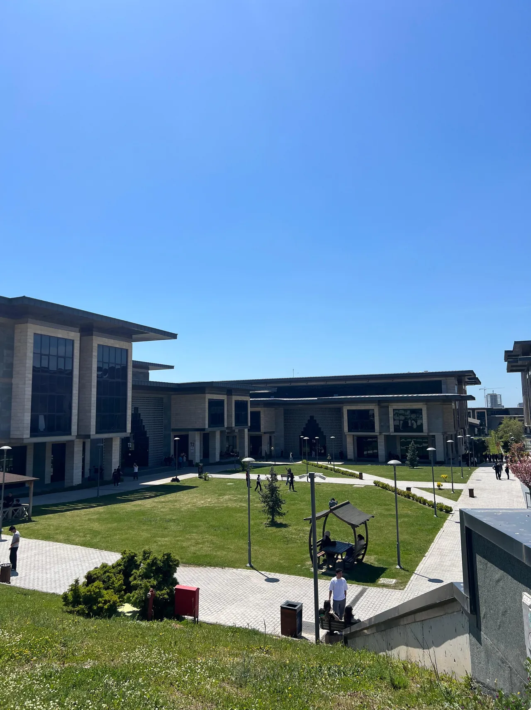

2023 — 2026
Bilgisayar Mühendisliği
Marmara Üniversitesi · Teknoloji Fakültesi · Lisans2.8/ 4.0 GANO
Yapay zekâ, derin öğrenme ve bilgisayarlı görüye yoğunlaştım; bitirme projem MIO’yu bu süreçte geliştirdim.
Öne çıkan dersler
Veri Madenciliği
Görüntü İşleme Teknikleri
Yapay Zekâya Giriş
Büyük Veri